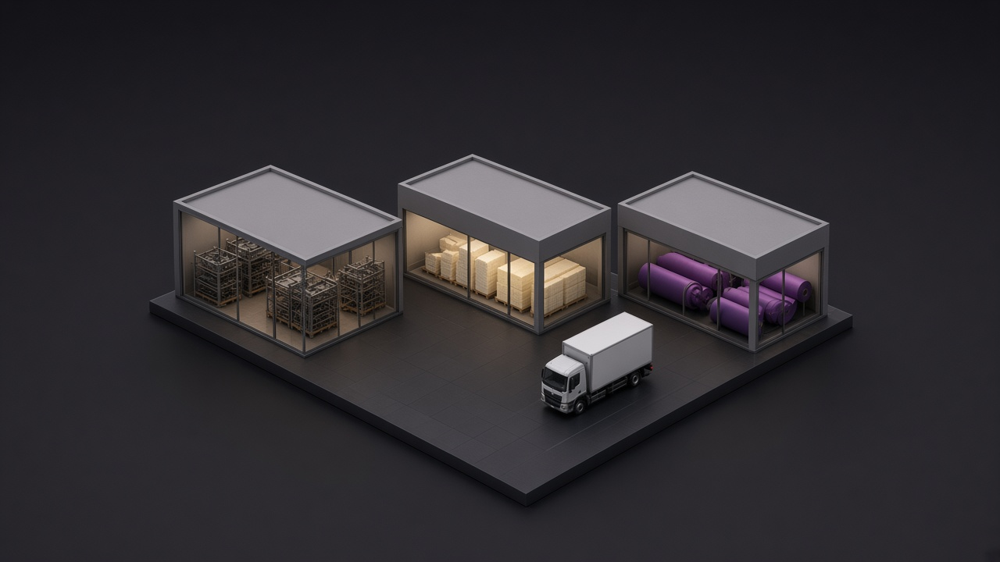
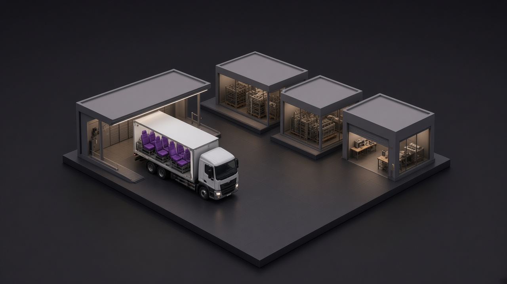

Suppliers, POs, dock, and cash to the vendor.
- Purchasing$1.2M/mo
- Receiving$380K/mo
Plant floor · Tier-1 seat plant
Hover a bay for what happens, who is involved, investment, and margin erosion. One flow: suppliers → plant → customers.
Scale reference: Tier-1 class of Reyes Automotive Group (Champions of Manufacturing, Chicago 2026). Dollars are illustrative estimates, not reported metrics.
This map shows one single flow — suppliers in, through the seat plant, out to customers. Hover a bay for people, investment, and margin erosion. Click a plant bay for the department page.
One critical path for supply delay. Other routes exist; this is the flow we map.

What they supply: frames · foam chem · cover fabric

What leaves: finished seat sets · ~24 / truck · est. · OEM + service
Order on this flow: suppliers → receiving → purchasing → planning → metal → foam → cut & sew → assembly → quality → shipping → customers.
Illustrative monthly loss when a supply delay hits the critical path.
Suppliers, POs, dock, and cash to the vendor.
Schedule, make, inspect — where idle time burns cash.
Sequence, ship, and keep the customer promise.
Each page starts with what the bay does and what it ships next.
Personas carry the friction. Estimates show why it is expensive.
Every page ties back to supply delay.